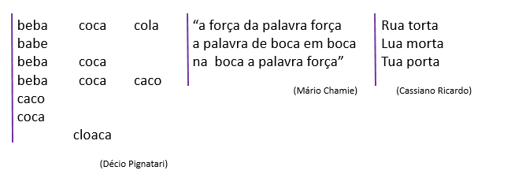

O som é um fenômeno físico, com um certo número de características distintivas. Ele tem, na lingua, um papel funcional - o de diferenciar as palavras umas das outras.
|  |
Note que, nestes exemplos, uma palavra é oposta a outra mediante os sons que emitimos.
Cada som é um conceito fônico, ou fonema.